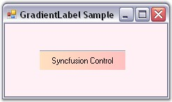
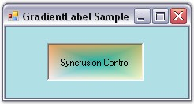

The following topics will help you become more familiar in using the GradientLabel control.
This section discusses the border settings of the GradientLabel control.
The border style and sides of the GradientLabel can be customized using the properties given below.
|
GradientLabel Properties |
Description |
|
BorderSides |
Specifies the sides of the GradientLabel that will have a border.
The options included are as follows.
Left, Top, Right, Bottom, Middle and All.
The default value is set to 'All'. |
|
BorderStyle |
Specifies the 3D border style for the GradientLabel.
The options included are as follows.
Raised, RaisedOuter, RaisedInner, Sunken, SunkenOuter, SunkenInner, Etched, Bump, Adjust and Flat.
The default value is set to 'Sunken'. |
|
BorderColor |
Sets the color for the 2D border. The BorderColor will be effective only when the BorderStyle property is set to FixedSingle. |
We can set the border sides for the GradientLabel using the BorderSides property. If BorderSides is set to 'Left', only the left border of GradientLabel will be shown.
The GradientLabel replaces the default border style provided for Label classes with the Border3DStyle type in this property. This property uses the Border3DStyle enumeration.
In 3D mode, the border styles can be Raised, Sunken, Flat and so on. Setting the value to 'Adjust' shows no border.
|
[C#]
this.gradientLabel1.BorderSides = System.Windows.Forms.Border3DSide.Top; this.gradientLabel1.BorderStyle = System.Windows.Forms.Border3DStyle.Flat; this.gradientLabel1.BorderColor = Color.Red; |
|
[VB.NET]
Me.gradientLabel1.BorderSides = System.Windows.Forms.Border3DSide.Top Me.gradientLabel1.BorderStyle = System.Windows.Forms.Border3DStyle.Flat Me.gradientLabel1.BorderColor = Color.Red |

Figure 604: Border Settings of GradientLabel
This section illustrates the foreground settings of the GradientLabel control.
DrawActiveWhenDisabled
Disabled text can be drawn active using the below given property.
|
GradientLabel Property |
Description |
|
DrawActiveWhenDisabled |
Gets / sets a value indicating whether the text should be drawn active when the control is disabled. The default value is set to 'False'. |
|
[C#]
this.gradientLabel1.DrawActiveWhenDisabled = true; |
|
[VB.NET]
Me.gradientLabel1.DrawActiveWhenDisabled = True |
This section illustrates the background settings of the GradientLabel control.
The GradientLabel control's background can be customized using the various options provided by the BackgroundColor property given below.
|
GradientLabel Properties |
Description |
|
BackgroundColor |
Gets / sets the background color and other styles. |
|
Style |
Specifies the brush style.
Solid, Pattern and Gradient.
The default value is set to 'Gradient'. |
|
BackColor |
Specifies the backcolor of the control. |
|
ForeColor |
Specifies the forecolor for any text or graphics in the control. |
|
PatternStyle |
Specifies the pattern style of the control. |
|
GradientStyle |
Specifies the gradient style of the background.
ForwardDiagonal, BackwardDiagonal, Horizontal, Vertical, PathRectangle and PathEllipse.
The default value is set to 'Vertical'. |
|
GradientColors |
Specifies the gradient colors.
The first entry in this list will be the same as the BackColor property, the last entry will be the same as the ForeColor property. |
|
[C#]
this.gradientLabel1.BackgroundColor = new Syncfusion.Drawing.BrushInfo(Syncfusion.Drawing.GradientStyle.PathRectangle, new System.Drawing.Color[] {System.Drawing.Color.LavenderBlush, System.Drawing.Color.LemonChiffon, System.Drawing.Color.DarkKhaki, System.Drawing.Color.SandyBrown, System.Drawing.Color.LightSeaGreen}); |
|
[VB.NET]
Me.gradientLabel1.BackgroundColor = New Syncfusion.Drawing.BrushInfo(Syncfusion.Drawing.GradientStyle.PathRectangle, New System.Drawing.Color() {System.Drawing.Color.LavenderBlush, System.Drawing.Color.LemonChiffon, System.Drawing.Color.DarkKhaki, System.Drawing.Color.SandyBrown, System.Drawing.Color.LightSeaGreen}) |

Figure 605: Background Color Set for GradientLabel
We can save and load the background color information in an XML file to persist the color state of a GradientLabel. The XmlSerializer Class can be used for providing serialization support.
· First include the required namespaces.
|
[C#]
using System.Drawing; using Syncfusion.Drawing; using System.Xml.Serialization; using System.IO; |
|
[VB.NET]
Imports System.Drawing Imports Syncfusion.Drawing Imports System.Xml.Serialization Imports System.IO |
· The below code snippet saves the information in a file called the colorinfo.xml.
|
[C#]
private void button1_Click(object sender, System.EventArgs e) { this.gradientLabel1.BackgroundColor = new BrushInfo(GradientStyle.Gradient, Color.ForwardDiagonal , Color.Biege); string xmlFilename = "C:\\colorinfo.xml"; XmlSerializer serializer = new XmlSerializer(typeof(Syncfusion.Drawing.BrushInfo)); FileStream fs= new FileStream(xmlFilename, FileMode.Create); System.Xml.XmlTextWriter writer = new System.Xml.XmlTextWriter(fs, System.Text.Encoding.Default); serializer.Serialize(fs,this.gradientLabel1.BackgroundColor); writer.Close(); } |
|
[VB.NET]
Private Sub button1_Click(ByVal sender As Object, ByVal e As System.EventArgs) Me.gradientLabel1.BackgroundColor = New BrushInfo(GradientStyle.Gradient, Color.ForwardDiagonal, Color.Biege) Private xmlFilename As String = "C:\colorinfo.xml" Private serializer As XmlSerializer = New XmlSerializer(GetType(Syncfusion.Drawing.BrushInfo)) Private fs As FileStream = New FileStream(xmlFilename, FileMode.Create) Private writer As System.Xml.XmlTextWriter = New System.Xml.XmlTextWriter(fs, System.Text.Encoding.Default) serializer.Serialize(fs,Me.gradientLabel1.BackgroundColor) writer.Close() End Sub |
Figure 606: Information saved in colorinfo.xml File